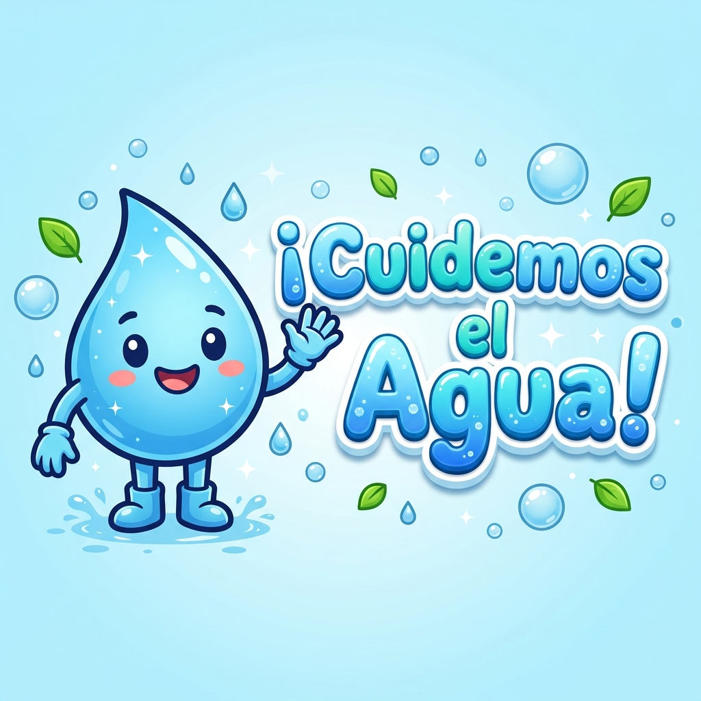
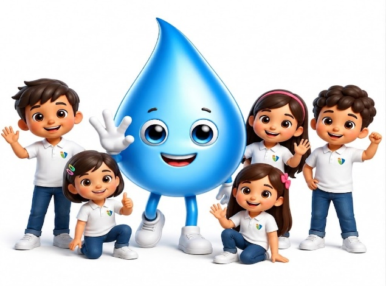
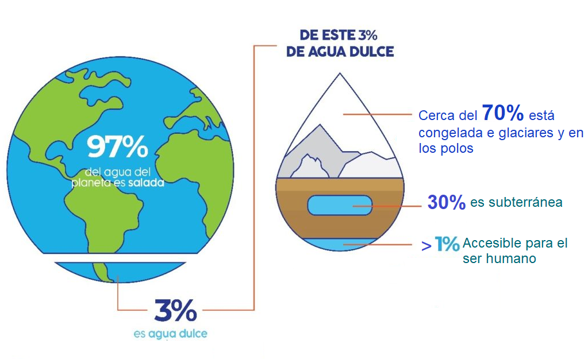
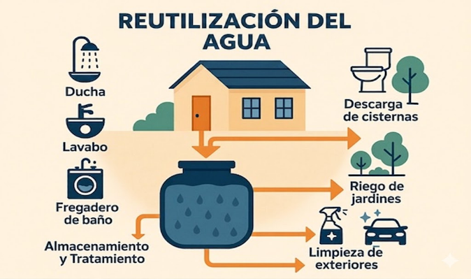
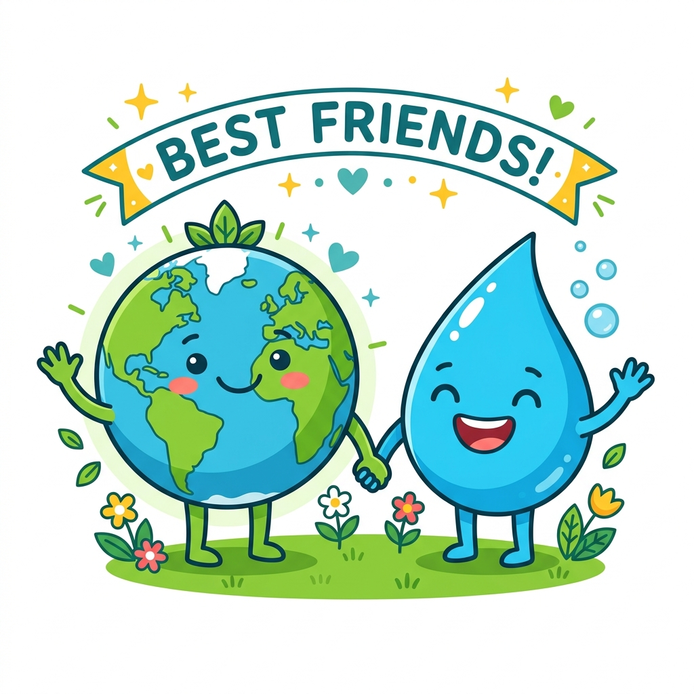
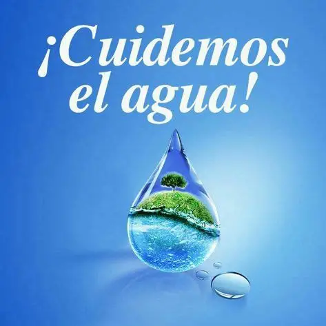

Manual interactivo creado por estudiantes de Innova Schools para aprender a cuidar cada gota de agua
Somos Los Hidroamigos 💧
Gracias por visitar nuestro proyecto.
Aquí descubrirás cómo la tecnología puede ayudarnos a cuidar el agua.
¡Esperamos que lo disfrutes!

Lo que queremos lograr con este proyecto
Promover el cuidado y uso responsable del agua en los estudiantes de 5to grado mediante el uso de la tecnología.
Concientizar sobre la importancia del agua como recurso vital.
Utilizar la tecnología para enseñar y promover el ahorro del agua.
Comprender las consecuencias de desperdiciar y no cuidar el agua.
Conocer cómo usamos el agua en la Innova School Canta Callao.
Comparar el consumo de agua para evaluar las acciones propuestas.
Descubrimos problemas con el uso del agua en nuestro colegio
Datos increíbles sobre el agua en nuestro planeta

La mayor parte del agua del planeta está en los océanos y no se puede beber
Y de ese 3%, el 70% está congelada en los glaciares y los polos
Solo una pequeñísima parte del agua la podemos usar los seres humanos
Es el Día Mundial del Agua. ¡Todos debemos celebrarlo cuidando cada gota!
El agua viaja por todo el planeta en un ciclo que nunca se detiene
El ciclo del agua tiene 4 etapas: Evaporación, Condensación, Precipitación y Recolección
El sol calienta el agua de ríos, lagos y océanos, y la convierte en vapor que sube al cielo
El vapor de agua se enfría y forma las nubes en el cielo
Las nubes se llenan de agua y cae como lluvia, nieve o granizo
El agua se junta de nuevo en ríos, lagos y océanos, ¡y el ciclo empieza otra vez!
El agua puede cambiar de forma según la temperatura
Es el agua que bebemos, con la que nos bañamos y regamos las plantas. ¡La forma más común!
Cuando el agua se congela se convierte en hielo. Esto pasa cuando hace mucho frío
Cuando calentamos el agua, se convierte en vapor. ¡Como cuando hierve la tetera!
6 recomendaciones de nuestro manual para cuidar el agua cada día
Asegúrate de que no queden goteando después de usarlos.
No dejes correr el agua mientras te enjabonas las manos.
El agua es un recurso valioso que debemos cuidar entre todos.
Cierra la llave cuando tomes un respiro o hagas una pausa.
Si ves tuberías o baños con fuga, avisa a un docente o personal de limpieza.
No arrojes residuos al inodoro o desagüe.
La tecnología nos ayuda a usar el agua de manera inteligente
Permiten que el agua salga únicamente cuando las manos se acercan, evitando que queden abiertos innecesariamente.
Al elegir entre descargas completas o parciales se disminuye hasta en un 60% el uso de agua en comparación con las cisternas tradicionales.

Permite aprovechar el agua proveniente de duchas, lavamanos, bebederos, etc. para el riego de jardines o limpieza.
Registramos y comparamos el consumo real para evaluar si nuestras acciones ayudan a ahorrar agua

Fuente: Marco Paz – Coordinador de operaciones y administración
Esto es lo que respondieron los estudiantes que completaron nuestra encuesta
Cargando resultados... 💧
El agua es un recurso vital que debemos cuidar y utilizar de manera responsable.
Las encuestas y observaciones nos permitieron identificar que es necesario crear conciencia y promover hábitos para evitar el desperdicio del agua en nuestra escuela.
La tecnología, mediante actividades interactivas, nos ayuda a aprender de manera más divertida y dinámica.
El registro y seguimiento del consumo del agua permitirá evaluar si las acciones propuestas mejoran los hábitos de ahorro y conservación del agua.
¡Juntos cuidamos cada gota! 💧
Gracias por visitar nuestro proyecto.
Esperamos que este manual te inspire a cuidar el agua todos los días.
Juntos podemos hacer la diferencia.
Marca la respuesta que consideres correcta. ¡Tu opinión es muy importante!
Tu respuesta se guardó. Así van los resultados de toda la escuela 💧
Mira estos videos para aprender más sobre el cuidado del agua

Aprende cómo el agua viaja por nuestro planeta
Descubre los usos del agua y por qué es vital para la vida
Conoce por qué no debemos contaminar el agua y cómo evitarlo
🌟 La tecnología nos ayuda a usar el agua de manera inteligente
y a cuidar cada gota para las futuras generaciones
Pon a prueba lo que sabes sobre el cuidado del agua